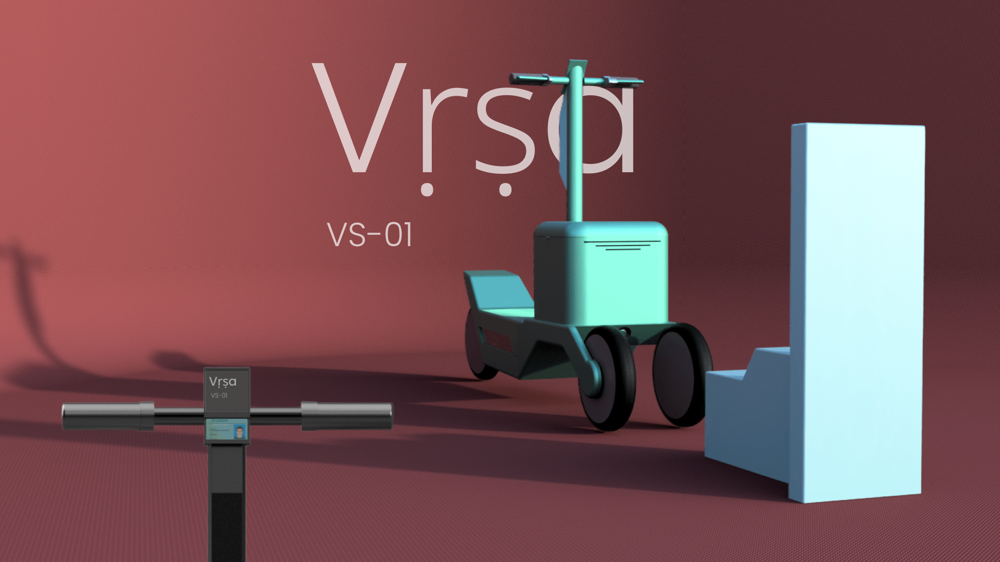
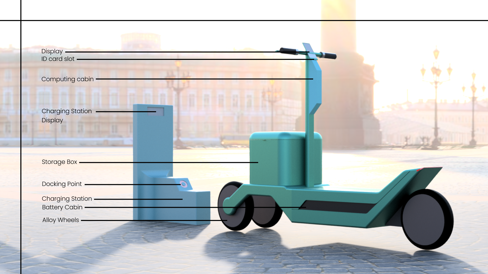
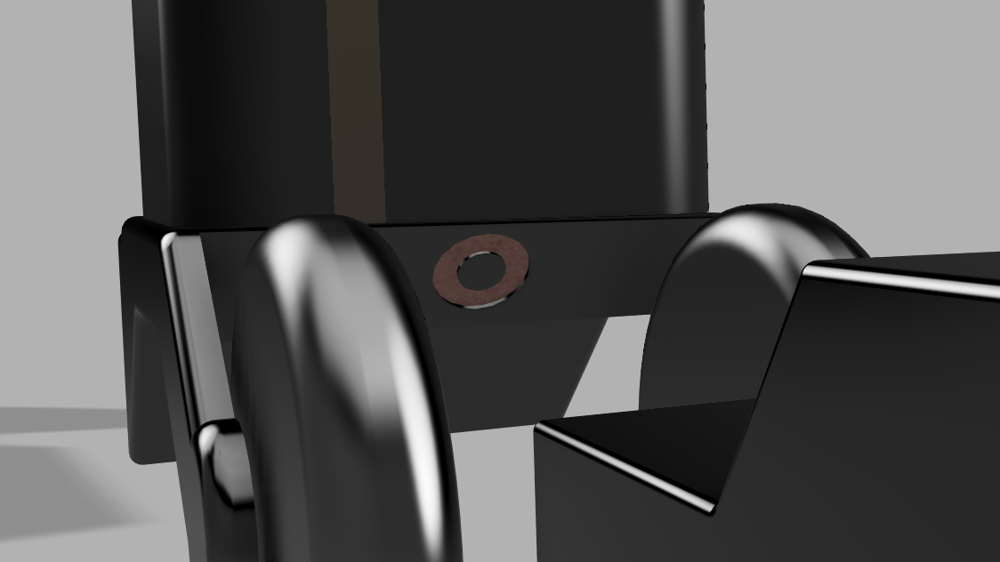

Vras

Across expansive university, corporate, and healthcare campuses, everyday transit is bottlenecked by the "on-site last mile." Distances between opposite corners—such as transiting from the main Academic Block to the Ovoidal Dining Hall—span 1.0 to 1.5 km, requiring a 15–20 minute walk under intense sun or rain. When class passing periods are under 10 minutes, students and staff face chronic lateness, physical fatigue, and missed opportunities. Connect-Campus establishes a managed closed-loop micromobility ecosystem combining self-stabilizing reverse-trike vehicles, smart inductive docking hubs, and geofenced IoT governance for zero-clutter institutional mobility.
The Campus Transit Gap: Academic Block to Ovoidal Dining Hall
On a sprawling university campus, daily navigation between primary activity centers creates severe systemic friction. Walking the 1.5 km corridor from the Academic Block to the Ovoidal Dining Hall or distant research labs takes 20 minutes of strenuous physical effort. Campus shuttles operate on rigid 15-minute intervals that fail to align with spontaneous class schedules. Across an institutional population of 20,000 making 2.5 cross-campus trips daily, this transit gap burns over 12,500 hours of productive human potential every single day. A dedicated 5-minute Connect-Campus ride reclaims 15 minutes of productive time per student per trip.

15 In-Depth Interviews & 250-Student Quantitative Validation
A mixed-method discovery phase was conducted—combining a market scan of commercial dockless fleets (Bird, Lime) and private shuttles with 15 qualitative 1-on-1 interviews and a 250-person institutional survey—to quantify travel habits and validate unmet user needs.
Dockless Scooter Chaos: Commercial app-based scooters create disorderly parking, block accessibility pathways, and pose pedestrian hazards due to unregulated speeds.
Inflexible Shuttle Loops: Fixed-route buses require long wait times and drop riders far from specific departmental buildings, failing the point-to-point requirement.
The "Time-Pressed" Persona: "I have 10 minutes to get from my lab to my lecture. The shuttle takes 15. Walking takes 20. I sprint and still show up late and exhausted."
Concept Rejection Matrix: Form Follows Campus Infrastructure
Early form-factor explorations evaluated three vehicle configurations against strict architectural constraints: ADA walkway compliance, turn-radius agility, safety on slopes, and fleet Bill of Materials (BOM) target costs.
The 3-Pillar Ecosystem: Vehicle, Hub & Geofence
Unlike consumer scooters, Connect-Campus functions as a synchronized closed loop where hardware, charging infrastructure, and software access governance operate in real-time harmony.

Commercial Fleet Uptime & Robust Engineering
Engineered from the ground up for high-abuse shared campus environments. The chassis uses a single continuous 6061-T6 aluminum extrusion with integrated wiring channels, a swappable 48V lithium-ion pack, solid 10-inch puncture-proof airless tires, and IP67 weather sealing.


Student ID Card Access & Magnetic Dock Charging
Access is designed around the student's everyday physical credential: inserting a standard student ID card directly into the stem slot to authenticate and unlock the vehicle. Upon return, the circular magnetic docking ring on the stem connects directly with the charging hub column, locking the vehicle securely in place and immediately initiating automated dock charging without loose cables.


Leaning Articulation & Low-Speed Stability
Dual front wheels coupled through a dynamic leaning linkage provide rock-solid low-speed balance on uneven pavement, smooth cornering lean at 18 km/h, and natural upright stabilization when coming to a halt at pedestrian crosswalks.